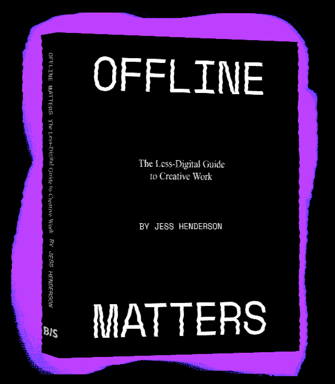

When did creative work become so boring?
How did ‘digital-first’ come to dominate everything?
...and why is nobody talking about it?
How did ‘digital-first’ come to dominate everything?
...and why is nobody talking about it?
Offline Matters is a handbook for anybody experiencing digital overload in their lives and creative work. Part insider exposé, part worker-manual, this book is for any creative seeking help on:
... away from the confines of our screens. We are dreaming of offline. Not as a romanticised past, a punishment, a quick detox, or a WiFi-free café. Offline is not a lifestyle. It’s a space of opportunity.
By the end of Offline Matters, you’ll have a new perspective on the dry digitality that defines creative work today – and a set of strategies for going beyond it.
- Navigating the possibility of offline alternatives
- Countering overwork culture, exploitation, and dulled-down ideas
- Recovering what you loved about your creative calling
... away from the confines of our screens. We are dreaming of offline. Not as a romanticised past, a punishment, a quick detox, or a WiFi-free café. Offline is not a lifestyle. It’s a space of opportunity.
By the end of Offline Matters, you’ll have a new perspective on the dry digitality that defines creative work today – and a set of strategies for going beyond it.
ABOUT THE AUTHOR

Jess Henderson (pseud.) founded Outsider while working as a brand strategist at numerous prominent creative agencies. Outsider was a critical space for industry insiders exploring the possibilities of ‘offline’ in the realm of creative work. Beginning as a subversive email newsletter titled ‘Outsider Weekly’*, Outsider became a mysterious cult figure in the industry through its opinion pieces and counter-cultural ideas, experiments, and events.
This book culminates three years of research conducted under the project and is also its sweet kiss goodbye. Jess now works as a writer, theorist, and activist interested in the impact of technology on our everyday lives. Today she writes, speaks, and teaches workshops on the missed opportunity of offline connections and its fallout on both workers and audiences.
Follow her work: No Fun
Contact Jess
Contact Publisher for Press Information
Jess Henderson (pseud.) founded Outsider while working as a brand strategist at numerous prominent creative agencies. Outsider was a critical space for industry insiders exploring the possibilities of ‘offline’ in the realm of creative work. Beginning as a subversive email newsletter titled ‘Outsider Weekly’*, Outsider became a mysterious cult figure in the industry through its opinion pieces and counter-cultural ideas, experiments, and events.
This book culminates three years of research conducted under the project and is also its sweet kiss goodbye. Jess now works as a writer, theorist, and activist interested in the impact of technology on our everyday lives. Today she writes, speaks, and teaches workshops on the missed opportunity of offline connections and its fallout on both workers and audiences.
Follow her work: No Fun
Contact Jess
Contact Publisher for Press Information
INTERVIEWS ON THE OFFLINE
Read our ongoing series of talks with artists, writers, and people thinking about their changing relationship to off-and online here:
Read our ongoing series of talks with artists, writers, and people thinking about their changing relationship to off-and online here:
Website by Clara Pasteau + Maisa Imamović
Author photograph by Yumna Al-Arashi
‘Offline Matters is a much needed take-down of the whole 'cult of creativity' from the inside. This rattle gun attack on the perniciousness of the creative digital work will leave you aghast and amused in equal measure.’
OLI MOULD
Author of Against Creativity
OLI MOULD
Author of Against Creativity
‘For any creative who has had to cater to corporate dimwits in order support their art, here's a terrific guide to bringing your best work into the commercial sphere without selling out or compromising your craft. This is a book about how to break free from the data-driven expectations of your client's spreadsheet, and retrieve the true novelty that makes you valuable in the first place.’
DOUGLAS RUSHKOFF
Author of Team Human
DOUGLAS RUSHKOFF
Author of Team Human
‘This book is extremely timely. The pandemic has obliged everybody to stay online almost all the time. Offline Matters reminds us that life is (also) elsewhere. The neologism ‘offline’, which did not exist twenty years ago, has philosophical relevance. This book is hoping us to discover it.’
FRANCO ‘BIFO’ BERARDI
philosopher, theorist and activist
FRANCO ‘BIFO’ BERARDI
philosopher, theorist and activist
‘Today we are all called upon to be the content providers of our own lives. This can be exhausting and estranging. Fortunately Jess Henderson has arrived to help us get offline, not into the pasts but into the presence of our lives. With compassion and humour Henderson brings us back to ourselves and it turns out we are not predestined to be profiled and branded. Offline Matters is the mutual help book we need right now!’
STEFANO HARNEY
co-author of The Undercommons: Fugitive Planning and Black Study
STEFANO HARNEY
co-author of The Undercommons: Fugitive Planning and Black Study
‘Jess’ has written a kind of outsider/artist/creative/inventor SURVIVAL MANUAL for our over-amped, information-overloaded, hypercommunicative age.
Anyone seeking encouragement, inspiration, moral support, and IDEAS would do well to study these pages, preferably in a solitary room with no music playing and no laptop showing ‘news’ (or a cellphone constantly pinging). Electronics in another room, please!’
V. VALE
founder of RE/Search and Search & Destroy
V. VALE
founder of RE/Search and Search & Destroy
‘Offline Matters couldn’t come at a more important and critical juncture in our human existence… The insights within this book highlight the current creative plight we’ve gotten ourselves into and the cracks within many cultural and societal pillars.
This book is a great step in helping us reclaim and reconsider our roles within the structures we’ve all been players within.’
EUGENE KAN
co-founder of MAEKAN and Hypebeast
EUGENE KAN
co-founder of MAEKAN and Hypebeast
‘Consider this book a rehabilitation program for a creative thinking populace unknowingly addicted to vain online activity. Through these influential pages, Henderson bestows upon their readers the tools necessary to free one’s mind from the constraints of the virtual realm so they may focus instead on something much more important… Reality.’
JAMES T. PADLOW
editor-in-chief, The Pen Name
JAMES T. PADLOW
editor-in-chief, The Pen Name
‘Jess Henderson, the guerrillera behind enemy lines, created Outsider; an anarchic newsletter/witty rant against the establishment, and the pervasive contentment with boredom and same old marketing bullshit. Someone had to say it, and thank god it was Jess. Her persistent brilliance kept bombing my inbox, and my joy.
I waited in anticipation, sometimes for months, to receive news from the trenches and one of my favorite wounded soldiers was writing these messages in digital bottles. Just like the white space between the lines in a book, it was like reading every unsaid truth, every unheard sigh or roll of the eyes in our industry.
I love hearing from Jess. The way she made me not feel alone in trying to dynamite the industry from within and her persistent encouragement to light up the spark. Thank you Jess. We need Offline Matters.’
ALVARO SOTOMAYOR
Creative Director, Wieden+Kennedy
ALVARO SOTOMAYOR
Creative Director, Wieden+Kennedy